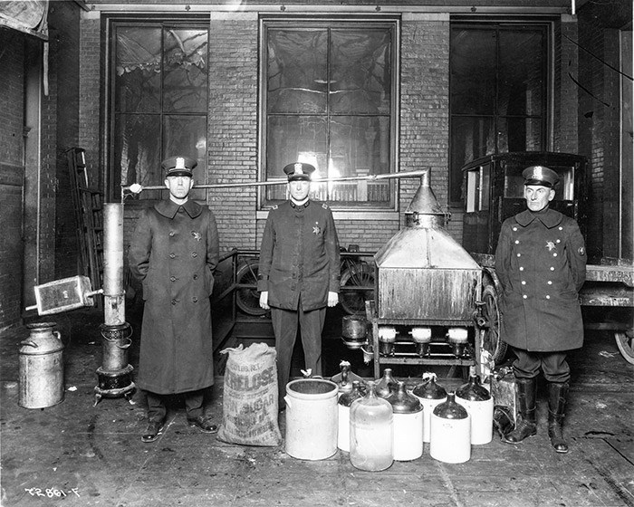

Directions: Study the photograph and the background note, then answer the questions.

Background. The photograph was taken in Indianapolis on December 9, 1920, eleven months after national Prohibition took effect. The three officers posed indoors with the equipment of one illegal distillery: a copper still with its pipe, rows of stoneware jugs for the finished liquor, and a sack of sugar, a raw material for the mash the still cooked. A raid produced a photograph like this one, a court case, and a destroyed still. It did not reduce the number of buyers waiting for the next still.
1. Name three details in the photograph that identify this equipment as a working distillery rather than stored kitchen goods, and say what each detail did in making liquor.
2. Under the Volstead Act, which beverage in a neighborhood grocery would have been illegal alongside the still's product: a bottle of beer at 3 percent alcohol, or a bottle of grape juice at 0 percent? Use the act's definition in your answer.
3. The background note says the raid did not reduce the number of buyers. Using the size of the federal enforcement force from the lesson, explain why destroying one still at a time could not close the supply.
4. A Chicago speakeasy owner in 1926 pays three regular bills that a legal saloon owner in 1916 did not pay. Name two of them, and explain what each payment bought.
1. Name three details that identify a working distillery, and what each detail did. Any three, with the function. The copper still with its long pipe, which heated fermented mash and condensed the alcohol vapor into liquor. The rows of stoneware jugs, which held and aged the finished product for sale and delivery. The sack of sugar, the raw material that fed the mash the still cooked. The uniformed officers posed on both sides confirm the equipment is seized evidence rather than a business display. Students who name objects without functions have observed the photograph without reading it. (Blueprint 7)
2. Which grocery beverage was illegal under the Volstead Act definition? The beer at 3 percent alcohol. The act defined intoxicating liquor as any beverage containing 0.5 percent or more alcohol by volume, so ordinary beer was contraband in the same legal category as distilled liquor. The grape juice at 0 percent was legal, and fermented cider and fruit juices made at home stood under the act's separate home production exception. (Blueprint 7)
3. Why could destroying one still at a time not close the supply? The Prohibition Bureau began with roughly 1,500 federal agents, an estimate, for more than 110 million people, thousands of miles of border and coastline, and stills that were cheap to build, easy to hide, and quick to replace. Each raid consumed agents, warrants, and court time against one small producer while demand, prices, and the profit that paid for the next still remained untouched. Credit requires the force figure and at least one fact about replacement or demand. (Blueprint 7)
4. Name two regular bills a Chicago speakeasy owner paid in 1926 that a legal saloon owner in 1916 did not. Any two, explained. Protection payments or bribes to police and officials, which bought raids that did not happen or warnings before raids that did. Higher supply prices paid to bootleggers, who charged for smuggling, distilling risk, and delivery because no legal wholesaler could sell to him. Payments into the organization that supplied him, including racketeering charges for protection against rival gangs. Bail and lawyer money held ready against arrest is also acceptable if explained as a standing cost of an illegal business. A legal saloon owner paid rent, license fees, and wholesale prices instead. (Blueprint 7)
Teacher note. This check is formative. Question 1 is the observation diagnostic. Question 3 predicts success on the writing task, because it asks for the same enforcement arithmetic the essay requires.